A summary of some projects I've completed over the last few years
This is just a longerwinded, more casual explaination of some of the project I've worked on. These have been a lot of work and cover a wide range of topics in engineering and research. I'm always excited to share what I've been working on so feel free to reach out to me to ask questions or get to know more.
Lab Consolidation and Relocation
In 2022, Virginia Tech's mechanical engineering department got new leadership, and one of their first priorities was consolidating our research back to campus. At the time, the DREAMS Lab—where I do all my additive manufacturing systems research—was scattered across seven different facilities around Blacksburg. We had equipment everywhere: metal 3D printers in one spot, polymer systems in another, the CNC machines in a third building, welders somewhere else, and so on. It was logistically inefficient and frankly made it hard to run cohesive research. When the new department head made it clear they wanted everything under one roof, I got tasked with making it happen. I became the point of contact between the lab, a construction company, and Virginia Tech's facilities team.
The scope was massive. We were moving 43 pieces of equipment total—I'm talking high-powered welders, multiple CNC machines, industrial-scale polymer and metal powder AM systems, desktop 3D printers, three robotic arms, specialized materials prep labs, friction stir welding equipment, and this anechoic chamber that had its own dedicated HVAC and fire suppression system. Basically everything you'd need to run an advanced manufacturing lab. The challenges came fast. First, the building we were consolidating into didn't have enough electrical service for all this equipment. We had to coordinate with the university to install new transformers and additional power panels to pull more power into the building—and this wasn't a quick process. Second, every single piece of equipment had different electrical requirements, different utility hookups, different cooling or air compression needs. There was no one-size-fits-all solution.
I ended up spending a lot of time coordinating with the facilities team on the building-wide air compression system—something that would serve not just our lab but all the labs in the building. I worked with riggers to safely move multi-ton pieces of equipment, managed the precision leveling and bolting of machines to the floor so they wouldn't drift during operation, dealt with the complexity of removing that anechoic chamber without breaking its specialized systems, and made sure we hit every EHS and safety requirement along the way. There were weekly coordination meetings, unexpected problems with utility routing, and a lot of back-and-forth about spatial constraints.
What I'm proud of beyond just "we moved the equipment" is how we actually designed the new space. I ran workshops with our graduate students to think through the ideal layout for our equipment given the constraints we had. We had to puzzle out how to arrange metal AM systems near material prep, how to position the robots and welders for safety and workflow, where to put CNC machines to minimize noise impact on other labs, and how to make sure everything fit in the room we had. It wasn't trivial—you can't just plop 43 pieces of equipment anywhere and hope it works. Over the course of two years, we solved every problem and successfully moved the entire lab without losing a single piece of equipment or compromising safety. The new consolidated facility is far better for collaboration, equipment utilization, and frankly, for running the research we want to run.
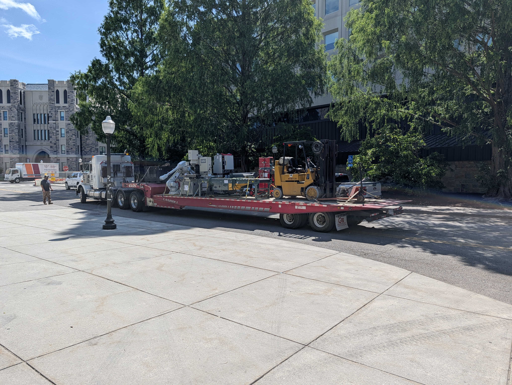
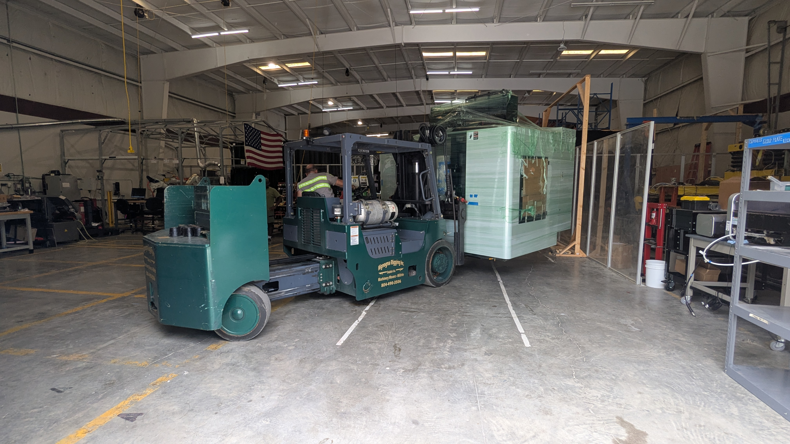
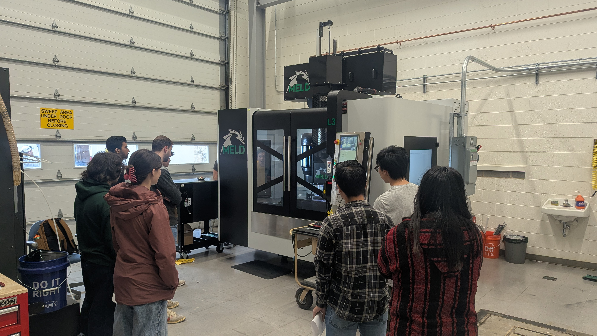

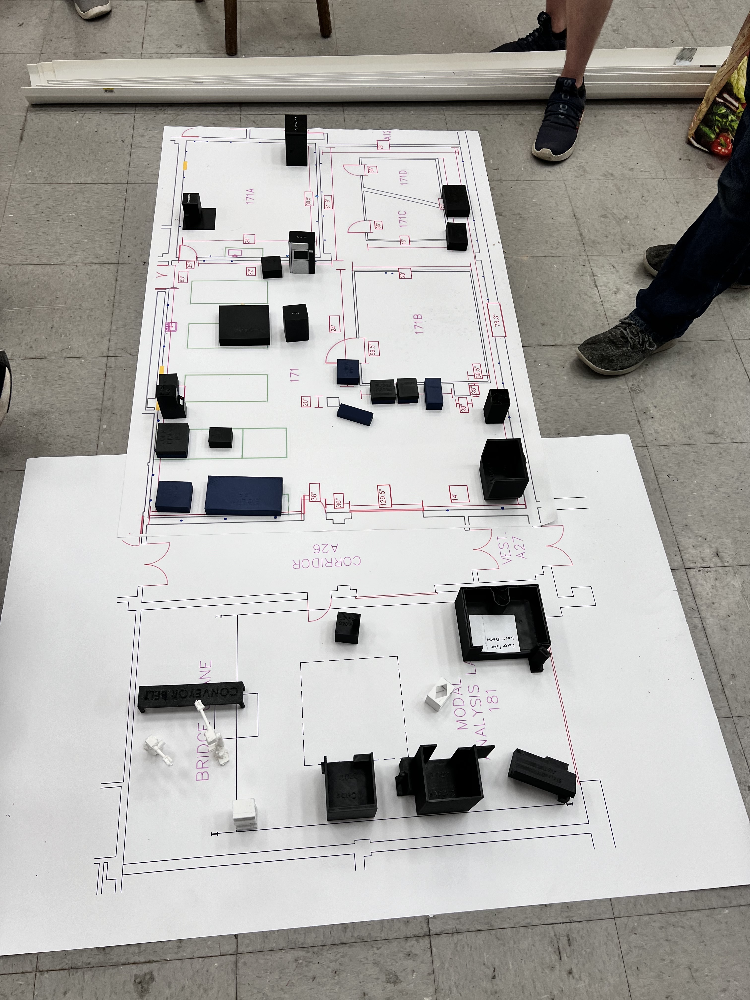
Golf Club Impact Measurement Rig
My advisor, Dr. Christopher B. Williams, teaches the additive manufacturing course every fall to over 70 students, and for years the final project has been a design-your-own challenge: pick a problem that can *only* be solved with additive manufacturing. When I took his class back in 2019, it was a really valuable learning experience, but I also watched him struggle to scope and manage 70+ different projects. A few of us students talked to him about changing the project structure, and we landed on something more focused: a golf club head design challenge.
The idea is elegant. With additive manufacturing, you can create complex internal geometries and shape features that traditional manufacturing just can't do. By carefully designing the geometry and controlling material properties through processing parameters, you can actually influence how the golf ball behaves when it impacts the clubface—things like the coefficient of restitution and energy transfer. So the final project became: design a golf club head using AM, and we'd test them to see how well each design performed.
My role was supposed to be simple: build a testing rig to measure the coefficient of restitution. That one sentence makes it sound straightforward. In practice, it was anything but. The rig got dropped on my lab ten days before the students needed to test their clubs as part of their final exam. And there was a fundamental problem I had to solve first: the students were designing 15+ different club heads, each with different mass, shape, and weight distribution. I couldn't just swing each club at a ball because I'd have to account for all that variation in mass and impact dynamics—it would be infeasible to isolate the design effects from the swing variation.
So I flipped the problem. Instead of swinging the club, I'd fixture the club in a consistent position and swing the ball. The club would stay the same every time—left-handed or right-handed, secured in a custom vice I designed. The ball would be launched with a repeatable swing mechanism each time. This way, the ball's mass and velocity stay constant, and I can isolate just how the club geometry affects the impact.
Building it under a ten-day deadline with limited budget meant getting creative. The base is made from scrap sheet metal we had lying around. The main structure is aluminum electrical conduit—we had stacks of it in the lab already—with some 3D-printed joinery to connect pieces. The bearing for the swinging arm came from an old RC car project, as did the accelerometer (an LIS3DH MEMS sensor). I modified the bearing mechanism and CNC'd half a dozen other parts to make it all work together. It was definitely a scrappy build, but it worked.
Now comes the hard part: actually measuring what happens during impact. Here's the thing about golf: when a club strikes a ball, they're only in contact for about 0.0001 to 0.0005 seconds. That's 100 to 500 microseconds. Over an entire 18-hole round, the ball probably touches the club for less than a second total. I had to measure a fraction of that contact time and capture the acceleration profile with enough fidelity to calculate coefficient of restitution.
I'd just finished my digital signal processing course, so I wanted to do this right. Using the Nyquist frequency theorem, to resolve 100-microsecond impacts, I needed to sample at over 1 megahertz. Straightforward on an oscilloscope—but the testing had to happen off-site, so the system needed to be portable. I couldn't bring lab equipment.
My first approach: use an Arduino with the Adafruit accelerometer breakout board. Standard stuff. But reading over SPI, the maximum sampling rate I could achieve was somewhere between 1 and 5 kHz. That's nowhere close to 1 MHz. At 5 kHz, my time resolution is 200 microseconds—useless for capturing a 100-microsecond impact. I was stuck.
Then I found a Teensy 4.1 in our parts bin. The datasheet said 600 MHz clock speed. Now *that* I could work with. I bypassed the nice SPI communication on the accelerometer board entirely and read directly from the raw analog output of the sensor into the Teensy's ADC. That got me to about 100 kHz—better, but still not enough.
I realized I was making some mistakes. The Teensy's ADC has 12-bit resolution—far more precision than I actually needed for measuring acceleration. By rounding more aggressively and cleaning up the code, I squeezed it up to 500 kHz. Halfway there. But to get the other half, I had to use direct memory access (DMA). Instead of the CPU reading the ADC and writing to RAM, I'd let the hardware DMA controller move that data directly from the ADC into system memory without CPU overhead. One less bottleneck.
With DMA enabled, I hit 1 MHz. Right where I needed to be. Now I could capture the acceleration profile of the ball impacting the golf club with a 1-microsecond time resolution, which was more than enough to resolve the transient dynamics and calculate coefficient of restitution from the before-and-after ball velocities.
The result: a portable, repeatable testing system that let us evaluate each student's golf club design and actually measure how well their AM design choices affected the impact characteristics. The rig got used for that year's final exam, and it worked. The whole thing—mechanical design, electronics, firmware, signal processing, fabrication—that's the kind of problem I actually enjoy solving.
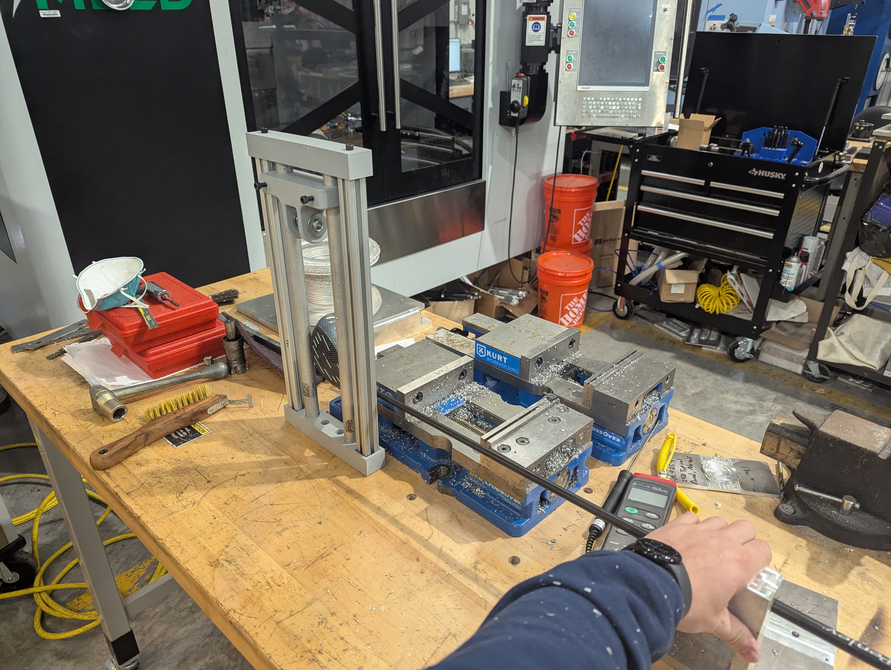

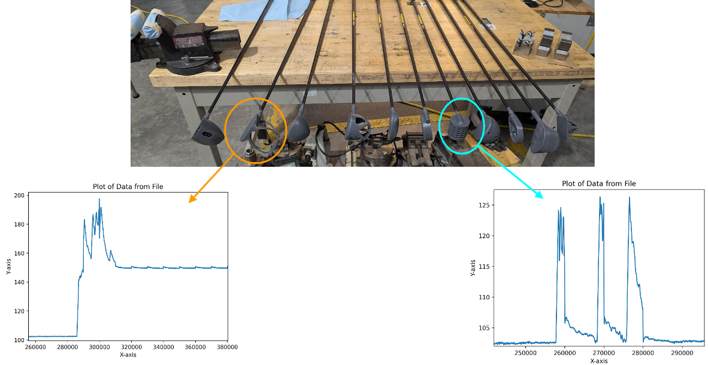
Fusion 360 Wire Arc DED Toolpath Plugin
One of the core research questions in my area—Wire Arc Directed Energy Deposition (DED-Arc)—is how the toolpath you program affects the thermal history during printing, which in turn affects the microstructure and mechanical properties of the finished part. Complex toolpaths create complex thermal cycles. Simple toolpaths (like a straight line or a weave pattern) are predictable and well-understood, but they limit what you can actually build. If I want to understand how a clever toolpath strategy can improve material properties, I need the ability to generate and test those complex toolpaths.
The software for this is out there. Mastercam's A-Plus, Siemens NX's additive extension, Powermill Ultimate—these are the industry standards for toolpath generation. They're also locked behind licenses that cost tens of thousands of dollars *per year*. For an academic lab on a research budget, that's just not realistic. So like any resourceful researcher, I started looking at what I actually had access to.
Autodesk gives students and faculty free access to Fusion 360 and its advanced plugins through education licenses. I was honestly surprised when I found out Fusion 360 included an advanced manufacturing extension with DED-Arc toolpath generation built in. This seemed like exactly what I needed. I spent some time learning how to use it, and it was actually pretty intuitive—I could design parts in Fusion, generate toolpaths, and be on my way.
Except... it didn't work. Not directly, anyway. The issue is that Fusion 360's manufacturing extension generates generic toolpaths in G-Code that follow a broad standard. But our machine—a DMS Hybrid Hero—isn't a generic CNC. It has its own machine-specific requirements, its own controller, its own dialect of G-Code. The generic output from Fusion couldn't be read by our machine. I could generate the perfect toolpath in software, but my machine wouldn't know what to do with it.
This is where I decided to dig myself deeper. I wrote a custom plugin for Fusion 360 that lets me input machine-specific parameters—things like our DMS Hybrid Hero's nozzle type, wire feed settings, travel parameters, all the details that make our machine unique. The plugin then passes this information to a custom post-processor I also wrote, which converts the generic Fusion toolpath data into G-Code that our specific machine can actually read and execute. It was like building a bridge between Fusion's generic output and our specific hardware.
But I wasn't quite done. As I started using the plugin to generate more complex toolpaths, I ran into another problem that commercial software solved years ago: toolpath ordering and collision avoidance. When you have a complex part with multiple operations—maybe multiple layers, different deposition patterns, different sections—you have to program them in the right order. Get the sequence wrong and your tool crashes into already-deposited material. With simple parts, you can do this manually. With complex geometry, it becomes a nightmare of manual trial-and-error.
The commercial CAM software solved this with a feature called Z-layer merge. It automatically looks at all your toolpath operations, understands their spatial relationships, and orders them in a way that avoids collisions. Powermill's had this for years. Fusion 360 has never added it. So I implemented it myself in my plugin. The algorithm looks at the Z-height of each operation, groups them intelligently, and reorders them to be safe. What would have taken hours of manual programming—or resulted in crashes and failed prints—now happens automatically.
This sounds like maybe a nice-to-have feature, but it's actually transformative. Before I built this, we were limited to simple toolpaths: weave patterns, linear deposits, basic geometries that were easy to sequence manually. Now I can generate and successfully print fully complex parts with arbitrary geometry. We can run them on our 3-axis system or push it to 8 degrees of freedom with our robotic arms. The research that I want to do—understanding how complex toolpaths create complex thermal histories and change material performance—is now actually possible.
What I'm proud of isn't just the plugin itself. It's the problem-solving approach: I found a real constraint (expensive software), found a creative alternative (free education license + existing tool), identified what was missing (machine-specific output + intelligent sequencing), and built exactly what was needed. It's the kind of work that doesn't exist in a paper or a patent, but it's enabled every experiment I've done in Wire Arc DED since.
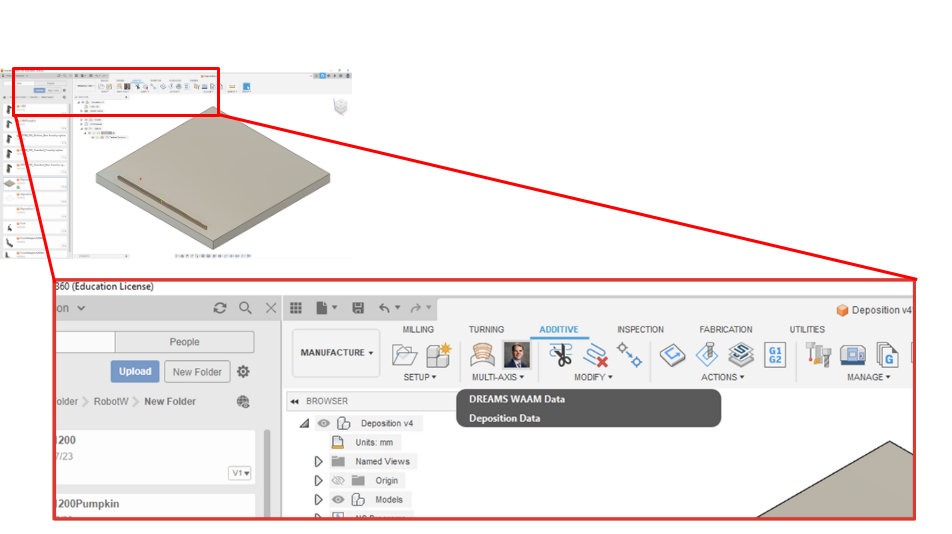
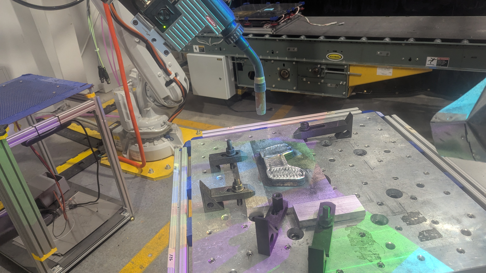
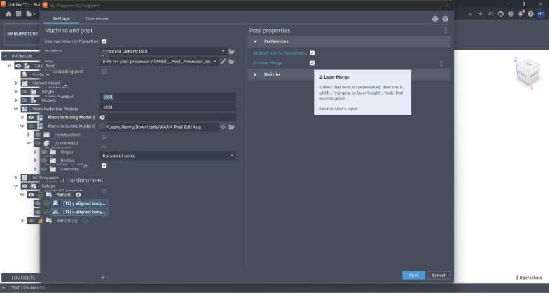

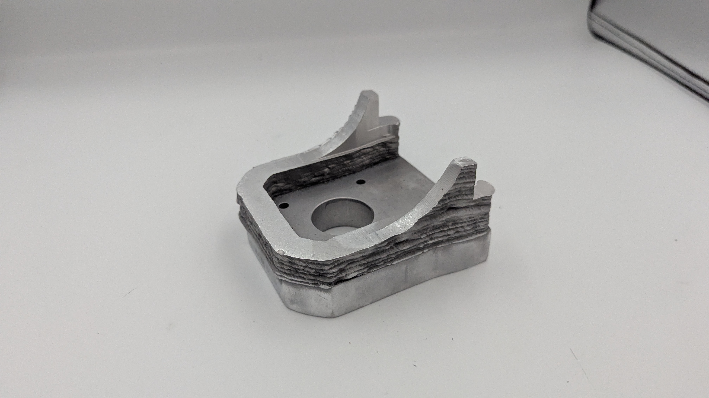
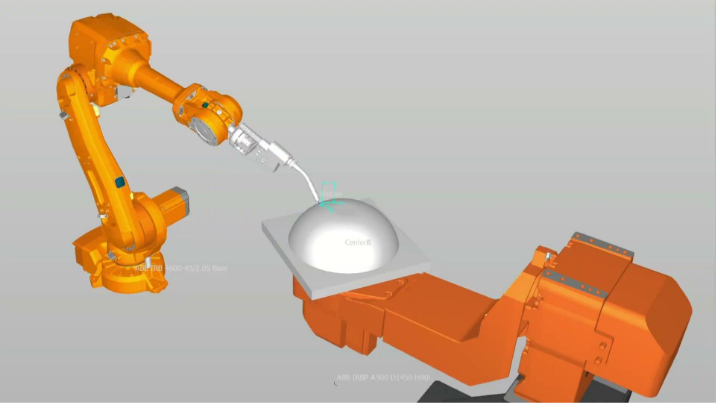
WISE PARTS: Embedded Structural Health Monitoring Sensor Package
This project came from a pretty ambitious idea: what if you could embed a complete sensor and electronics package directly inside a metal part *while it's being manufactured*? Not bolted on afterward. Not retrofitted. Literally embedded within the material during the printing process. That's the vision of WISE PARTS—Wireless Integrated Sensor for Embedded Structural Health Monitoring—a DARPA-funded effort I worked on alongside my advisor and lab collaborators.
The motivating application is straightforward. In aerospace, automotive, and critical infrastructure, people want to know if a metal part is damaged or degrading in service. Right now, you inspect parts manually, or you bolt sensors on the surface, or you just hope nothing breaks. WISE PARTS says: what if the part itself could sense damage in real time, from the inside? What if it could tell you when something is wrong without any external wiring?
The problem is that embedding electronics inside a metal part being manufactured is *hard*. We're talking about a process where temperatures exceed 300°C, there's mechanical stress from the surrounding material being laid down, the spatial envelope is incredibly tight (you can't make the sensor package much larger than a postage stamp or it interferes with the deposition tool), and everything has to survive being buried inside metal. You can't put a lithium-ion battery in there—it'll catch fire. You can't rely on traditional wireless communication—the metal surrounding the sensor acts like a Faraday cage, blocking all radio signals.
My role was designing the entire sensor package hardware: the circuit board architecture, component selection, signal conditioning, and power management. It required thinking across multiple disciplines simultaneously—thermal engineering, embedded systems, analog electronics, signal processing, and materials science. The design needed to satisfy four core operational needs: (1) detect damage in the host structure through strain or vibration signatures, (2) measure temperature accurately across a wide range, (3) communicate sensor data wirelessly, and (4) be completely self-powered.
Piezoelectric materials are the backbone of this whole system. A piezoelectric element—specifically a Macro-Fiber Composite (MFC) transducer—can do three things: it generates electrical charge when strained (strain sensing), it creates impedance shifts detectable electrically (damage detection via electromechanical impedance), and it converts electrical signals back into mechanical vibrations (actuation for communication). When the MFC is bonded to the host structure, these properties let you sense what's happening mechanically and also send data out of the part.
The communication strategy is the most novel part. Since radio won't work inside a metal part, we use mechanical waves instead. The MFC is driven with a frequency-modulated signal that travels through the solid metal as longitudinal mechanical waves—basically, tiny vibrations propagating through the structure. An external receiver (like a laser vibrometer pointed at the surface) can pick up these vibrations and decode the data. It's completely wireless, completely encapsulated, and it doesn't require any wiring.
The hardware architecture is organized around six functional blocks. First, a logic and control block using a Texas Instruments microcontroller—I had to select a chip that was ultra-compact (important for our 1cm³ envelope), ultra-low power (critical for energy harvesting), and capable of managing timing-critical signal generation. I chose the MCPM0C1104 MCU, small enough to fit but powerful enough to run the firmware for multi-modal sensing.
Second, a temperature sensing block using a tiny thermistor in a voltage-divider configuration, with a lowpass filter to remove high-frequency noise. The design had to achieve ±2°C accuracy across −40 to 120°C, and I selected a specific thermistor (Vishay NTCS0402E3104FHT) in a 0201 package because it was small enough and accurate enough for our needs.
Third, a charge amplifier for strain sensing. The MFC generates charge proportional to strain, but the MCU can only measure voltage. So I implemented a charge-to-voltage converter using a high-impedance operational amplifier (Microchip MCP6L01) with a 250 MΩ feedback resistor. This circuit is incredibly sensitive—high feedback resistors and pA-level input bias currents—which means component selection and circuit board layout have to be meticulous.
Fourth, the vibrational communication block. This uses a direct digital synthesis IC (Analog Devices AD9833) to generate frequency-modulated signals that drive the MFC. The MCU controls the frequency through SPI, allowing it to modulate data onto the mechanical waves. I chose frequency modulation specifically because it's robust to attenuation and amplitude variations—the metal structure attenuates and filters the signal unpredictably, so relying on amplitude would be unreliable. Frequency changes remain detectable even after lots of filtering.
Fifth, a mode-switching block. Here's a problem: the MFC can sense *or* transmit, but not simultaneously without extremely complex circuitry that wouldn't fit. So I implemented a logic-controlled analog switch that toggles between sensing mode and communication mode. But the MFC can generate up to 50V under high mechanical strain, and my analog switch is only rated for 6.5V. The trick is to not switch the MFC signal itself—instead, switch the power rails to the downstream blocks. When sensing is active, power goes to the charge amplifier. When communicating, power goes to the frequency modulator. This keeps all voltages safe while achieving mode switching in minimal space.
Sixth, the energy harvesting and power management architecture. Lithium batteries don't survive 300°C, so I switched to supercapacitor storage—a 10F supercapacitor can handle the thermal stress and stores enough energy to power the system for sensing and communication cycles. The energy harvesting circuit uses the piezoelectric effect in reverse: ambient vibrations in the structure charge the supercapacitor. I selected an integrated energy management IC (AEM30940 EMIC) that handles cold-start boost conversion, maximum power point tracking, and regulated voltage distribution. The MCU and all sensing circuits run at 3.3V, derived from the supercapacitor through the EMIC's buck converter.
Every component in this design was selected through a systematic constraint-driven process. I had to consider thermal survival (will this survive 300°C? Is the package small enough? Can it withstand mechanical stress?). I had to think about electrical integration (does it play nicely with 3.3V power? Does it have the required signal bandwidth? Does the noise floor allow the measurements I need?). I had to manage power budgets (what's the quiescent current of each block? How long can the supercapacitor power a sensing cycle? How much energy can we harvest from vibration?).
What I'm proud of with this project isn't just that I designed a working circuit. It's that I solved multiple "second-level" problems that aren't obvious from the spec sheet. The MFC overvoltage problem. The charge amplifier leakage current drift. The frequency modulation choice for noisy mechanical channels. The supercapacitor-versus-battery trade-off. The architecture of power switching instead of signal switching. These aren't textbook solutions—they're the result of understanding constraints deeply and building solutions from first principles.
This project is still under active development, and because it's DARPA-funded, a lot of it isn't public. But it represents the kind of work I find most satisfying: hardware-constrained problem solving that requires you to think across multiple engineering domains simultaneously, understand the physics of your materials and processes, and make deliberate trade-offs in the face of competing requirements. That's the core of what I think makes a good engineer.
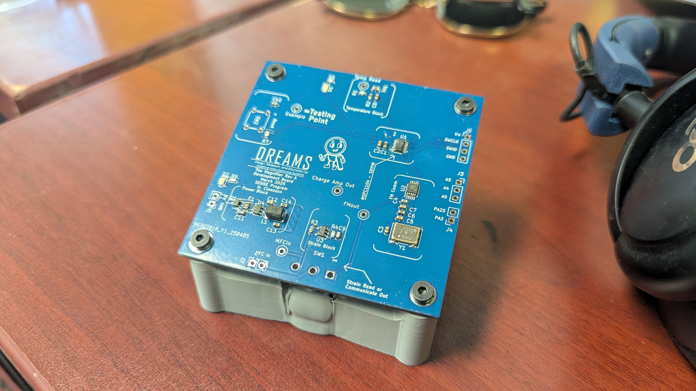


Advanced Materials Characterization & Microstructure Analysis
One of the things that separates someone who just knows how to *operate* a manufacturing process from someone who *understands* it is the ability to connect what you build to what's happening at the microstructure level. That's what materials characterization is about. It's asking: what does the metal actually look like inside? How did the process change the crystal structure, the grain size, the phases present? And crucially—how does that microstructure explain the properties you observe?
I've done characterization work supporting two of my labmates' dissertations. The work itself is supporting research, but it gave me hands-on experience with some of the most sophisticated equipment in materials science: scanning electron microscopes with energy-dispersive spectroscopy, electron backscatter diffraction, all the techniques that let you really see what's happening in a material at the microscale.
The first project was supporting Juan Espinosa's work on bronze infiltration into porous binder-jetted samples. Juan's dissertation explores how you can take a low-density 3D-printed part and infiltrate it with molten bronze to create a high-strength composite. It's a clever manufacturing approach, but the question is: how successfully does the bronze actually infiltrate the pores? Does it fill uniformly? Are there regions where it doesn't penetrate?
My contribution was fractographic and compositional analysis. I took notched three-point bend samples that had been tested to failure and examined the fracture surfaces with a JOEL scanning electron microscope. First, I looked at the ductile failure mechanisms—where did the material actually break? What does the fracture surface tell you about how the load was distributed?
But the more interesting part was using energy-dispersive X-ray spectroscopy (EDS)—basically, you hit the sample with an electron beam and measure the characteristic X-rays that come back to determine elemental composition. By scanning the fractured surface, I could map out where the bronze had successfully infiltrated and where it hadn't. I segmented the results to show high-infiltration and low-infiltration regions, which gave Juan quantitative data on infiltration uniformity.
Then something unexpected showed up in the compositional data. I noticed chromium depletion in certain regions of the 316L stainless steel matrix material. This is actually a known phenomenon called chromium sensitization—when the material is heated (like during the infiltration process), chromium can migrate and precipitate out as carbides, leaving the surrounding area depleted of chromium and susceptible to corrosion. By looking at the EDS maps, I could see exactly where this was happening and traced it back to inconsistencies in the sintering process. That chromium sensitization turned out to be the root cause of why some samples were failing—not because the bronze infiltration was bad, but because the binder-jet material itself had been compromised by the thermal history.
The second characterization project was grain size analysis on DED-Arc aluminum 5556 samples for Drew Rosenhien's dissertation. Drew developed an innovative approach to wire-arc deposition that eliminates the typical "arc-on" and "arc-off" transients—basically, he found a way to deposit continuously without breaking the arc, which reduces defects and improves build quality.
His dissertation explores the process map he developed, but to understand how the process affects the material, you need to look at the microstructure. Specifically, he wanted to correlate the interlayer temperature (how hot the material gets between passes) to the resulting grain structure. Larger grains indicate hotter processing; finer grains indicate cooler processing. By measuring grain size across different build conditions and at different heights in the part, Drew could infer temperature profiles and validate his process model.
I guided the sample preparation and ran the electron backscatter diffraction (EBSD) scans on a Helios 5 SEM. EBSD is powerful because it tells you not just grain size, but crystal orientation—you can see exactly how the crystals are oriented relative to each other and reconstruct the grain microstructure. The process is meticulous: samples are ground to progressively finer grits (300 to 1200 grit), then electropolished to remove surface damage and create a clean crystalline surface. Then you scan at high magnification, collecting spatial orientation data.
For this study, we scanned nine samples corresponding to three measurement zones and three different build conditions. Each scan covered a 1.2 × 1.2 mm area with a 5 μm step size—fine enough to resolve individual grains. The goal was to capture both the heat-affected zone (HAZ) and the weld zone (WZ) to get a holistic view of how the process affected the microstructure from the center of a weld bead outward.
Here's where it gets interesting, and where understanding materials science means knowing what *not* to over-interpret. A common assumption in materials research is the Hall-Petch relationship—smaller grains means higher strength. For most metals, this is true. But in aluminum, especially aluminum 5000-series alloys, the correlation is actually quite weak. 5000-series aluminum gets its strength primarily from solid-solution strengthening (alloying elements like magnesium dissolved in the aluminum matrix), not from grain boundary effects. When you do the math—calculating expected yield strength by summing dislocation arrestment from various mechanisms—you find that at grain sizes greater than 60 micrometers (which is what we were seeing), grain size has almost no impact on strength.
So why did we measure grain size at all? Because it was a *proxy* for interlayer temperature. Larger grains indicate more thermal energy, which means we could use the grain measurements to reconstruct the thermal history during the build—which is exactly what Drew was trying to understand. But the grains themselves aren't why the material is strong or weak. Recognizing that distinction is important. A lot of materials research papers try to correlate microstructure directly to mechanical properties without thinking critically about whether that correlation actually explains the physics.
What I got out of this work was twofold. Practically, I became proficient with SEM, EDS, and EBSD—tools that are fundamental to materials characterization. I learned sample preparation protocols, data processing using MTEX and EDAX software, and how to interpret micrographs critically. But beyond the technical skills, I learned to think about materials science as a way of asking questions: what does the microstructure tell me? What assumptions am I making about the relationship between structure and properties? Where are those assumptions valid, and where are they misleading?